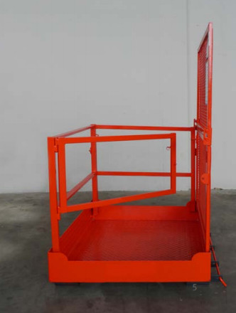
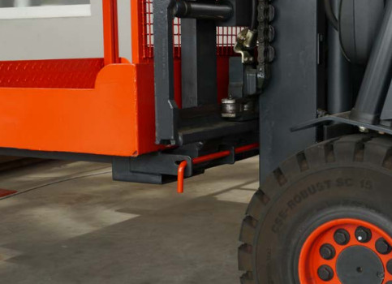
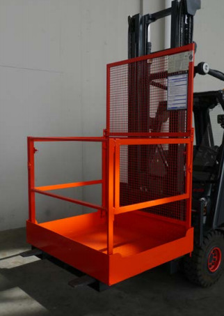

3.1.1 Boden
Arbeitsbühnen sollen im Boden keine Öffnungen haben. Soweit sich Öffnungen nicht vermeiden lassen, dürfen sie nur so groß sein, dass eine Kugel mit 15 mm Durchmesser nicht hindurch fallen kann oder es müssen Einrichtungen zum Auffangen herabfallender Gegenstände oder Abdeckungen vorhanden sein.
3.1.2 Umwehrung
Als Sicherung gegen Absturz von Personen und Herabfallen von Gegenständen ist eine Umwehrung erforderlich, die den zu erwartenden Kräften standhält und aus Handlauf, mindestens einer Knieleiste und Fußleiste besteht. Die Umwehrung muss nach TRBS 2121-4:2019 mindestens eine Höhe von 1,10 m haben. Die Fußleiste sollte 0,15 m hoch sein, um ausreichenden Schutz gegen Herabfallen von Gegenständen zu bieten. Seile und Ketten dürfen nicht als Umwehrung verwendet werden. Der Freiraum zwischen dem Handlauf und der Knieleiste sowie der Knieleiste und der Fußleiste darf 0,50 m nicht überschreiten.
3.1.3 Einstieg
Eine Seite der Umwehrung sollte, um den Einstieg zur Arbeitsbühne zu erleichtern, beweglich ausgeführt sein. Am zweckmäßigsten ist es, wenn die bewegliche Umwehrung als Tür ausgebildet ist. Diese darf sich jedoch nicht nach außen öffnen lassen und sollte im geschlossenen Zustand selbsttätig verriegelt sein. Wird die Fußleiste an der Tür angebracht, darf der Abstand zwischen der Unterkante der Fußleiste und dem Boden der Arbeitsbühne nicht mehr als 15 mm betragen.

Abb. 1
Nach innen öffnende Tür als Einstieg in die
Arbeitsbühne

Abb. 2
Formschlüssige
Befestigung der
Arbeitsbühne
3.1.4 Rückenschutz
Zum Hubmast hin genügt es nicht, nur eine Umwehrung aus Handlauf, Knieleiste und Fußleiste anzubringen. Hier ist ein zusätzlicher Schutz gegenüber den Quetsch-, Scher- und Kettenauflaufstellen im Hubmast erforderlich. Zum Schutz von Personen auf der Arbeitsbühne gegen Quetsch- und Scherstellen durch die Hubeinrichtung muss an der Rückseite der Arbeitsbühne ein mindestens 1,80 m hoher, durchgriffsicherer Rückenschutz angebracht sein, so dass Quetsch- und Scherstellen im Hubmast mit den Fingern nicht erreicht werden können.
3.1.5 Gabeltaschen
Die Arbeitsbühne sollte so eingerichtet sein, dass sie mit dem Flurförderzeug wie eine Flachpalette aufgenommen werden kann. Hierzu müssen unter dem Boden Einfahrtaschen vorhanden sein. Diese müssen nach unten und zur Seite geschlossen sein, um zu verhindern, dass sich die Arbeitsbühne nach oben abheben lässt oder dass sie zur Seite abrutschen kann. Sie darf aber auch nicht kippen können. Daher müssen die Taschen klein gehalten werden und in ihren geometrischen Maßen zu den Gabelzinken passen.
3.1.6 Befestigung
Die Arbeitsbühne muss so am Flurförderzeug befestigt werden können, dass sie sich nicht in Gabellängsrichtung verschieben kann. Dies geschieht zweckmäßigerweise durch eine formschlüssige Verbindung hinter dem Gabelrücken oder dem Gabelträger, z. B. mit Hilfe von Bügeln, Klinken, Haken, Ketten, Bolzen oder einsteckbaren Stangen mit Sicherungsmöglichkeiten gegen ein unbeabsichtigtes Lösen. Alle Teile, die zum Befestigen der Bühne notwendig sind (z. B. Bügel, Ketten, Bolzen, Splinte) müssen unverlierbar sein, damit sie bei Bedarf verfügbar sind. (Abb. 2)
3.1.7 Kennzeichnung
Für die sichere Verwendung der Arbeitsbühne ist es erforderlich, an ihr ein dauerhaftes und leicht erkennbares Schild anzubringen, auf dem die maximale Zuladung und das Eigengewicht angegeben sind. Ferner muss aus dem Schild deutlich und verwechslungsfrei hervorgehen, an welchem Flurförderzeug die Arbeitsbühne angebracht werden darf.
3.1.8 Kurzgefasste Betriebsanleitung
An der Arbeitsbühne muss eine kurzgefasste Betriebsanleitung angebracht sein, welche die wichtigsten Angaben über die Handhabung der Arbeitsbühne und das Verhalten der mitfahrenden Person enthält. Damit werden die Benutzer immer wieder aufmerksam gemacht, wie sie mit der Arbeitsbühne umzugehen haben.
3.2.1 Standsicherheit
Damit die aus Gabelstapler und Arbeitsbühne bestehende Gerätekombination standsicher ist, muss der Gabelstapler über eine ausreichende Tragfähigkeit verfügen. Die Tragfähigkeit gilt als ausreichend, wenn
oder

Abb. 3
Arbeitsbühne am Gabelstapler
Bei Gegengewichtstaplern gilt die Tragfähigkeit auch als ausreichend, wenn
und
Im Hinblick auf dynamische Einflüsse durch die sich auf der Arbeitsbühne bewegenden Personen und im Hinblick auf die Handkräfte sollte eine Tragfähigkeit von 1,5 t auch bei einem Gesamtgewicht der Arbeitsbühne von weniger als 300 kg nicht unterschritten werden.
3.3.1 Standsicherheit
Damit die aus Regalflurförderzeug und Arbeitsbühne bestehende Gerätekombination standsicher ist, muss das Regalflurförderzeug über eine ausreichende Tragfähigkeit verfügen. Bei einer Arbeitsbühne mit der Grundfläche einer Euro-Palette (800 mm x 1200 mm) sollte die Tragfähigkeit des Regalflurförderzeuges bei der Hubhöhe, die der Höhe der angehobenen Arbeitsbühne entspricht, mindestens das 5fache des Gewichtes betragen, das sich aus dem Eigengewicht der Arbeitsbühne, dem Gewicht der mitfahrenden Person(en) und der Zuladung ergibt. Dabei wird vorausgesetzt, dass sich die Personen auf der Arbeitsbühne in Gabelhöhe befinden.
3.3.2 Rückenschutz
Bei Regalflurförderzeugen mit hebbarem Fahrerplatz ist die Arbeitsbühne in der Regel durch den Fahrerplatz vom Hubmast getrennt, so dass Quetsch-, Scher- und Kettenauflaufstellen im Hubmast von der Arbeitsbühne aus in der Regel nicht erreicht werden können. Im Allgemeinen ist es bei diesen Geräten aber möglich, mit dem Lastaufnahmemittel einen Zusatzhub gegenüber dem Fahrerplatz, einen so genannten Initialhub, auszuführen, der je nach Bauart des Gerätes bis 1500 mm betragen kann. In diesem Falle ist bei der Gestaltung der Rückseite, d. h. der zum Initialhub hin gelegenen Seite der Arbeitsbühne, darauf zu achten, dass durch den Initialhub keine Quetsch- und Scherstellen mit der Arbeitsbühne entstehen. Ist dies nicht möglich, müssen sie – analog zu den Bestimmungen des Abschnitts 3.1.4 - gesichert werden.
3.3.3 Schutz gegen Quetsch- und Scherstellen durch die Umgebung
Beim Einsatz an Regalen oder in Schmalgängen kommen für Personen auf der Arbeitsbühne zu den Absturzgefahren noch Gefahren hinzu, die sich aus der Bewegung der Arbeitsbühne vor den Regalen ergeben, wenn – wie dies üblicherweise der Fall ist – der Abstand zwischen Arbeitsbühne und Regal weniger als 500 mm beträgt. Es besteht die Gefahr des Anstoßens am Regal oder auch die Gefahr, zwischen Regal und Arbeitsbühne bzw. zwischen Regal und Regalflurförderzeug gequetscht oder geschert zu werden. Eine Umwehrung nach Abschnitt 3.1.2 allein genügt nicht, um diesen Gefahren vorzubeugen.
3.3.3.1 Umzäunung
Eine Möglichkeit der Sicherung besteht in einer Umzäunung der Arbeitsbühne, die so beschaffen ist, dass Personen auf der Arbeitsbühne mit Körperteilen wie Kopf, Rumpf, Händen, Armen, Füßen und Beinen nicht in die Gefahrstellen zwischen Arbeitsbühne bzw. Regalflurförderzeug und Regal gelangen können. Das bedeutet, dass die Umzäunung ausreichend hoch und ausreichend durchgriffsicher sein muss. Sie muss wenigstens 1,8 m Höhe haben. Die Maschenweite muss so bemessen sein, dass niemand hindurch die Gefahrstellen erreichen kann.Es genügt nicht, die Umzäunung nur an den Seiten anzubringen, die dem Regal zugewandt sind.
Damit Personen auf der Arbeitsbühne nicht mit Körperteilen um die Umzäunung herum in Gefahrstellen geraten können, ist es erforderlich, die Umzäunung auf beiden Seiten zur Vorderseite – d.h. die dem Hubmast abgewandte Seite – herumzuziehen. Auch auf der Rückseite der Arbeitsbühne – d.h. die zum Hubmast hin gelegene Seite – ist dies erforderlich, falls diese Seite nicht ohnehin schon durch einen Rückenschutz gesichert sein muss oder die Lage vor dem hebbaren Fahrerplatz an dieser Seite ein Erreichen der Gefahrstellen zum Regal hin verhindert. Eine 1,80 m hohe Umzäunung kann bei der Durchführung von Arbeiten hinderlich sein. Dies kann man vermeiden, wenn man den oberen Teil der Umzäunung klappbar oder verschiebbar gestaltet. Hierbei ist jedoch darauf zu achten, dass der bewegliche Teil in Schutzstellung selbsttätig mechanisch verriegelt ist, sich nicht nach außen öffnen kann und auch in geöffnetem Zustand mit der Arbeitsbühne fest verbunden bleibt. Die Absturzsicherung von mindestens 1,10 m Höhe muss aber auch bei geöffneter Umzäunung erhalten bleiben. Ferner muss durch eine Steuersperre sichergestellt sein, dass bei geöffneter Umzäunung Fahr- und Hubbewegungen ausgeschlossen sind (Anmerkung: In der Normung wird die Steuersperre als „Verrieglung“ bezeichnet). Die Steuersperre sollte nach dem Ruhestromprinzip arbeiten.
Wegen der Ausführung der Schalter wird auf die DGUV Information 203-079 „Auswahl und Anbringung elektromechanischer Verriegelungseinrichtungen für Sicherheitsfunktionen“ verwiesen.
3.3.3.2 Ortsbindende Zustimmungsschalter
Der Schutz vor Quetsch- und Schergefahren gegenüber dem Regal kann außer durch Umzäunung auch auf andere Weise erreicht werden, z. B. durch eine Zustimmungsschaltung, welche die Person auf der Arbeitsbühne während der Fahr- und Hubbewegungen an einen vorgesehenen Platz bindet, von dem aus sie nicht durch Körperbewegungen (Bewegungen des Kopfes, des Rumpfes, der Arme, Hände, Beine oder Füße) in die Gefahrstellen zwischen Arbeitsbühne bzw. Regalflurförderzeug und Regal gelangen kann. Hier bietet sich eine Beidhandschaltung an, die gewährleistet, dass Fahr- und Hubbewegungen nur möglich sind, solange beide Zustimmungsschalter betätigt werden.
Beim Loslassen müssen beide Schalter in die Null-Stellung zurückgehen. Fahr- und Hubbewegungen müssen sofort unterbrochen werden, wenn auch nur einer der beiden Schalter losgelassen wird. Vor Einleitung einer neuen Fahr- oder Hubbewegung müssen beide Schalter zuvor in Null-Stellung zurückgegangen sein und erneut betätigt werden. Die Wirksamkeit der Schalter darf nicht aufgehoben oder umgangen werden können. Hierzu gehört, dass es nicht möglich sein darf, beide Schalter mit nur einer Hand zu betätigen. Dies darf auch nicht unter Verwendung einfacher Hilfsmittel möglich sein. Bei Verwendung einer ortsbindenden Zustimmungsschaltung ist kritisch zu prüfen, ob tatsächlich verhindert ist, dass sich die Person während der Betätigung der Zustimmungsschaltung mit Körperteilen in Gefahrstellen bewegen kann. Ist dies nicht sicher verhindert, muss das verbleibende Restrisiko durch eine angepasste zusätzliche Umzäunung abgedeckt werden. Dies muss aber im Einzelfall geprüft werden.
Sollen auf der Arbeitsbühne mehrere Personen mitfahren, muss für jede mitfahrende Person eine eigene ortsbindende Zustimmungsschaltung vorhanden sein. Letzteres wird jedoch dann problematisch, wenn die Zahl der mitfahrenden Personen wechselt. In diesem Fall sollte man einer vollständigen Umzäunung (siehe Abschnitt 3.3.3.1) den Vorzug geben, die eine besondere Zustimmungsschaltung entbehrlich macht.
3.3.3.3 Elektrischer Anschluss an das Regalflurförderzeug
Bei Arbeitsbühnen, die mit Steuersperren und/oder Zustimmungsschaltung ausgerüstet sind, muss neben der mechanischen Befestigung zusätzlich ein elektrischer Anschluss der Arbeitsbühne mit dem Regalflurförderzeug hergestellt werden. Die Verbindung geschieht zweckmäßigerweise über unverwechselbare Steckanschlüsse. Dabei muss noch gewährleistet sein, dass die Arbeitsbühne nur von solchen Regalflurförderzeugen aufgenommen werden kann, die für diesen Verwendungszweck entsprechend aus- bzw. umgerüstet sind. Dazu sollte die Arbeitsbühne über eine Einrichtung verfügen, die sicherstellt, dass sie nur dann verwendet bzw. betreten werden kann, wenn sie vom für diesen Zweck bestimmten Regalflurförderzeug aufgenommen wird.
Weiterhin ist zu beachten, dass bei aufgenommener Arbeitsbühne mit dem Lastaufnahmemittel keine Dreh-, Schwenk- oder Verschiebebewegungen mehr möglich sein dürfen. Dies kann z. B. dadurch erreicht werden, dass diese Bewegungen bei Herstellung des elektrischen Anschlusses zwischen Arbeitsbühne und Regalflurförderzeug automatisch gesperrt werden. Eine andere Möglichkeit besteht in der Verwendung eines Schlüsselschalters am Fahrerplatz, mit dem vom Normalbetrieb auf den Betrieb mit Arbeitsbühne umgeschaltet werden kann. Mit der Umschaltung auf den Betrieb mit Arbeitsbühne müssen Dreh-, Schwenk- und Verschiebebewegungen gesperrt sein.